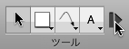

ツールパレットのヒント
展開/折り畳みテクノロジー 

OmniGraffle 5 には高度な展開/折り畳みテクノロジーが搭載されています。デフォルト設定で、テキストツールに続くボタンをクリックしてツールパレットを左端の項目に折り畳むことができます。このようにして、貴重なツールバーのスペースを別のボタン用に確保します。さらに、パレットを展開して実際に必要なときに残りのツールを利用することもできます。
描画ツールの設定で仕切りを移動することにより、パレットが折り畳まれた状態で利用できるツールを変更したり、展開ボタンを完全に削除します。
ツールを選択したままの状態にするには
デフォルトでは、ツールを一度クリックすると１回だけそのツールを使用することができます。1回使用した後は選択ツールが再度有効になります。小さなダークブルーの「1」アイコンがツールに表示されるので、確認することができます。 
ツールを引き続き有効にするには、そのツールを再度クリックします。アイコンが非表示になり、別のツールを選択するまでそのツールが有効になることを示します。
この動作は描画ツールの設定で変更できるので、引き続きツールを常に有効（無効）の状態にします。
ツールの属性を変更するには
通常、インスペクタを使用して、キャンバスで選択したオブジェクトを修正します。ツールが作成するオブジェクトのスタイルを変更するためにもインスペクタを使用します。図形、ペン、ライン、またはテキストツールを [option] + クリックすると（あるいは、描画ツールの設定に従ってクリックすると）、ツールボタンは設定したハイライト色でハイライト表示され、ツールを確認していることを示します。 
ツールが確認されている間に、変更内容がツール自体に適用されます。たとえば、ラインツールのストロークの色を赤にすると、描画するすべてのラインのストロークが赤になります。
ツールのポップアップメニューからデフォルトに戻すを選択すればいつでもその設定をリセットすることができます。
スタイルメニュー
図形、ペン、ライン、およびテキストツールにはスタイルメニューがあります。これらにはツール自体に適用される様々なスタイルが含まれています。ボタンの隅にある三角形をクリックするか、ボタンをクリックしたままでメニューを開きます。 
メニューの最上部の項目が設定する最後のスタイルです。
OmniGraffle Pro には、再度使用するスタイルを追加するためのよく使うスタイルのリストがあります。メニュー上部の現在のスタイルとよく使うスタイルを自由に切り換えることができます。スタイルを複製を選択して、選択したスタイルのコピーをよく使うスタイルに追加します。スタイルを削除を選択して、選択したスタイルをよく使うスタイルから削除します。スタイルをよく使うスタイルに追加するには、オブジェクトを [control] + クリックまたは右クリックしてよく使うスタイルに追加を選択するか、オブジェクトをキャンバスからツールボタンまで [option] + ドラッグします。
キャンバススタイルリストには、キャンバスに存在する適用可能なスタイルが表示されます。いずれかを選択すると、そのコピーが現在のスタイルを置換します。
ステンシルスタイルリストには、開いたステンシルから利用できるスタイルが表示されます。いずれかを選択すると、そのコピーが現在のスタイルを置換します。
スタイルを確認を選択すると、インスペクタ上でツールそのもののスタイルを変更できます。
デフォルトに戻すを選択して、ツールのスタイルを元の普通の設定に戻します。
フローティングツールパレット
必要に応じて、ツールパレットウインドウをツールバーのそれとは別に開くことができます。ウインドウメニューからツールパレットを選択するだけです。フローティングツールパレットの隅をドラッグして整形し、そのウインドウを書類ウインドウの近くに配置して磁気的に付けます。
ツールに瞬時にアクセスする
クリックせずに、数字キーを押してツールを有効にすることができます。1 から 0 までの各キーは、パレットのツール（左側から右側）に該当します。
描画ツールの設定でホットキーを設定することもできます。